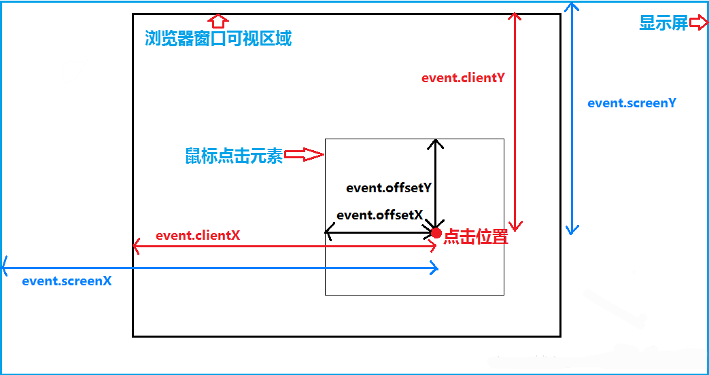

<!DOCTYPE html>
<html lang="en">
<head>
    <meta charset="UTF-8">
    <meta name="viewport" content="width=device-width, initial-scale=1.0">
    <meta http-equiv="X-UA-Compatible" content="ie=edge">
    <title>Document</title>
    <style>
        .box{
            width: 400px;
            height: 400px;
            background-color: red;
        }
        #bigBox{
            /* width: 600px;
            height: 600px; */
            border: 1px solid red;
            margin: 0 auto;
            /* position: relative; */
        }
        #smallBox{
            width: 50px;
            height: 50px;
            background-color: blue;
            position: absolute;
            left: 0;
            top: 0;
        }
    </style>
</head>
<body>
    <!--  -->
    <!-- <div class="box" onmousemove="cmove(e)"></div> -->
    <div id="bigBox" >
        <div id="smallBox"></div>
    </div>
<script>
    //window
      console.log(window.screen.width) //设备可视化宽度
      console.log(window.screen.height) //设备可视化高度
      console.log(window.screen.pixelDepth) //返回屏幕的颜色分辨率（每象素的位数）
      console.log(window.outerWidth)  //浏览器可视化宽度 包括所有界面元素（如工具栏/滚动条）
      console.log(window.outerHeight) //浏览器可视化高度 包括所有界面元素（如工具栏/滚动条）
      console.log(window.innerWidth) //  窗口的内部宽度与高度(不包含工具条与滚动条):
      console.log(window.innerHeight) // 窗口的内部宽度与高度(不包含工具条与滚动条):
      console.log(window.scrollX) //获取文档水平滚和垂直滚动的的像素数。 ie不支持
      console.log(window.scrollY) //获取文档水平滚和垂直滚动的的像素数。 ie不支持
      console.log(window.screenX) //浏览器跟电脑窗口的距离（左上角为基准）
      console.log(window.screenY) //浏览器跟电脑窗口的距离（左上角为基准）
      var box = document.getElementsByClassName('box')[0];
     // box.onmousemove = function(e){
        //event.clientX、event.clientY 鼠标相对于浏览器窗口可视区域的X，Y坐标（窗口坐标），可视区域不包括工具栏和滚动条。
        //event.offsetX、event.offsetY 鼠标相对于事件源元素（srcElement）的X,Y坐标，最早只有IE有，现在都支持。
          //console.log(e)
     // }
    var sbox = document.getElementById('smallBox')
     //element
     //全局绑定鼠标移动事件
    //  document.onmousemove = function(e){
    //     sbox.style.left = e.clientX+"px";
    //     sbox.style.top = e.clientY+"px";
    //  }
     //移除事件
     sbox.onmouseover = function(){
        this.style.cursor = "default"
        
     }
     sbox.onmouseenter = function(){
        this.style.cursor = "move"
    }
     sbox.onmousedown = function(e){
        document.onmousemove = function(e){
            if (e.clientX + sbox.offsetWidth > window.innerWidth) {
                sbox.style.left = (window.innerWidth - sbox.offsetWidth)+'px';
            }else if(e.clientX <=(sbox.offsetWidth) / 2){
                sbox.style.left = 0;
            }else{
                sbox.style.left = e.clientX - (sbox.offsetWidth) / 2+"px";
            }
            if (e.clientY + sbox.offsetHeight > window.innerHeight) {
                sbox.style.top = (window.innerHeight - sbox.offsetHeight)+'px';
            }else if(e.clientY <= (sbox.offsetHeight) / 2){
                sbox.style.top = 0;
            }else{
                sbox.style.top = e.clientY - (sbox.offsetHeight) / 2+"px";
            }
        }
     }
     sbox.onmouseup = function(){
        document.onmousemove = null
     }
</script>
</body>
</html>